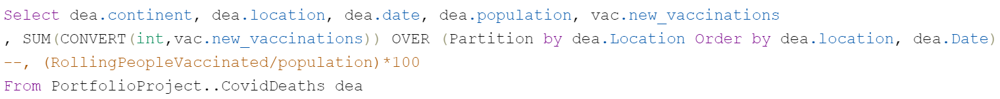

The following summary aims to expose the path followed to manage a series of queries in order to get insights from a Dataset on COVID Deaths and Vaccinations. It was part of a project-study from my master's degree. At the end, I leave a link to my Github account where you will be able to see all of the queries employed.
First, I download and familiarize myself with the COVID dataset. I made necessary adjustments in Excel, such as formatting and organizing data for SQL integration.
I then started querying the SQL database to explore COVID data, focusing on cases, deaths, vaccinations, and population metrics.
Later, I engaged in more complex SQL tasks, including data cleaning, applying aggregate functions, and performing calculations to derive insights from the data.
I learned to join different data tables based on common columns like location and date for comprehensive analysis.
Next, I stablished SQL views to organize and simplify access to processed data, preparing for visualization. I formated and structured data specifically for visualization, considering the creation of visual representations in Tableau.
Finally, I saved and upload SQL scripts to my repository on GitHub, ensuring is clear and accesible.
Feel free to check the whole queries in my Github account, thank you for reading!